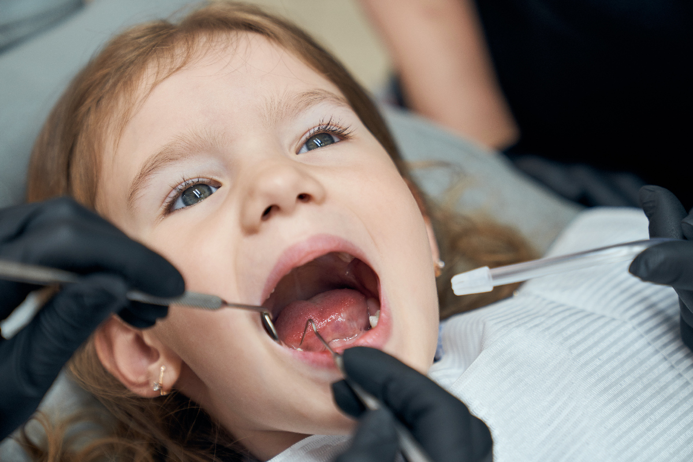
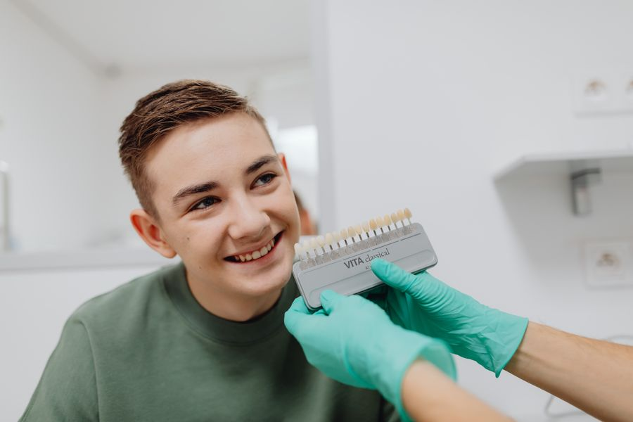
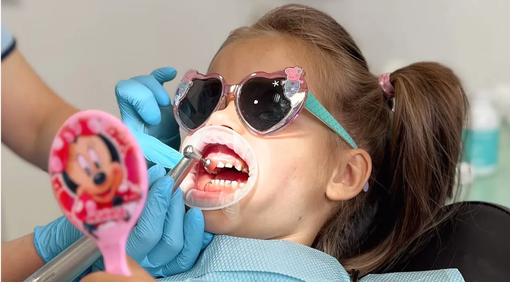
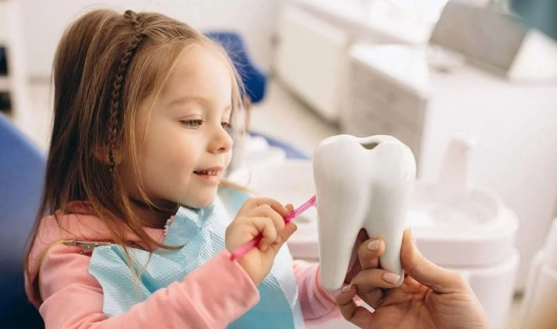
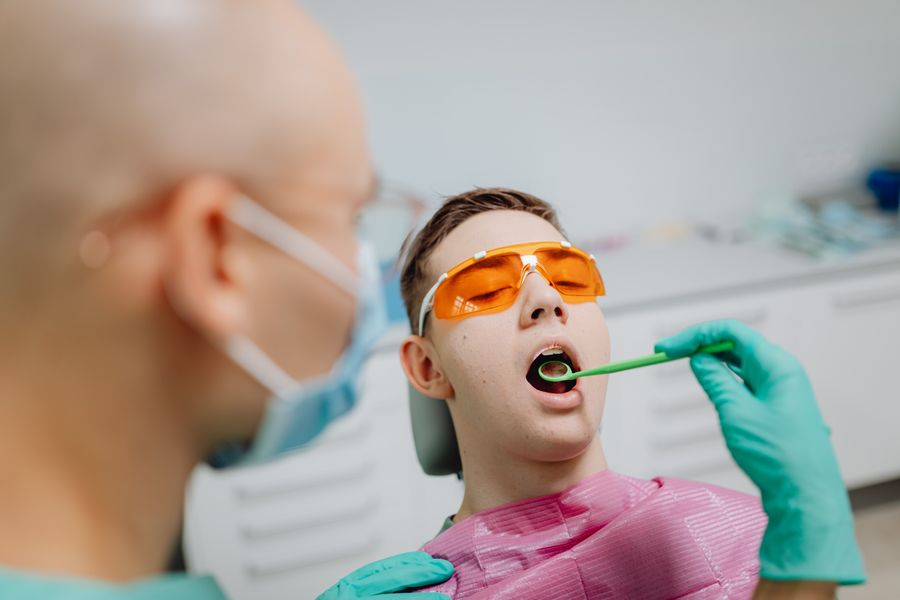
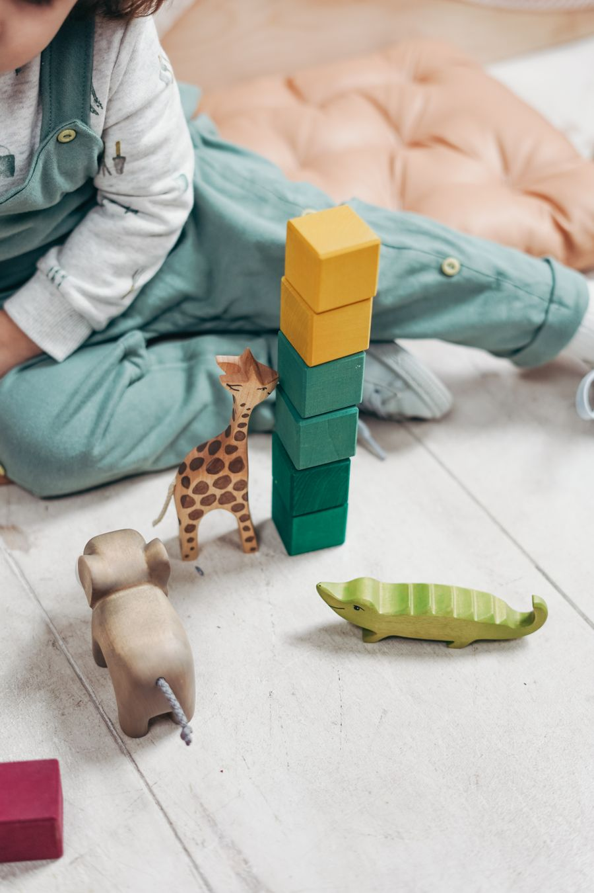

Психологічна підготовка
Допомагаємо дитині звикнути до кабінету, щоб візит пройшов без стресу і сліз.
Записатись
вул. Миколи Закревського, 63, оф. 42, Київ, Україна, 02222
Дитячий стоматолог у Деснянському районі Києва, вул. Закревського 63. Дбайливе лікування без страху — для дітей і спокій для батьків.





Шукаєте дитячу стоматологію на Троєщині або дитячого стоматолога в Деснянському районі? У Family Dent на Закревського 63 працюємо з дітьми спокійно: психологічна підготовка, профілактика та сучасне лікування молочних зубів.
Допомагаємо дитині звикнути до кабінету, щоб візит пройшов без стресу і сліз.
ЗаписатисьЗняття нальоту щіткою або Air Flow — свіжий подих і здоровий колір емалі.
ЗаписатисьГерметизація фісур і комплексне фторування — захист від карієсу надовго.
ЗаписатисьСклоіономерні та фотополімерні реставрації — зберігаємо молочний зуб до зміни.
Записатись
Яскрава пломба, яку дитина обирає сама — лікування стає цікавою пригодою.
ЗаписатисьЛікування пульпітів і періодонтитів молочних зубів, зокрема ампутаційним методом.
ЗаписатисьОгляд, план лікування та відповіді на всі питання батьків — без поспіху.
ЗаписатисьSikora Family Dent — зручна дитяча стоматологія для сімей з Троєщини та Деснянського району. Пояснюємо кожен етап простою мовою, даємо час звикнути до кабінету і підбираємо лікування під вік дитини. Також приймаємо запити «детская стоматология Троещина» — працюємо українською та російською.
Якщо вам потрібен дитячий стоматолог на Троєщині, звертайтеся до Sikora Family Dent на вул. Миколи Закревського, 63. Ми поруч із домом для мешканців Троєщини та Деснянського району Києва: без довгих поїздок у центр, з уважним підходом до маленьких пацієнтів.
У нашій дитячій стоматології на Троєщині є психологічна підготовка до лікування, професійна чистка, фторування, герметизація фісур, лікування карієсу молочних зубів і кольорові пломби Jen-Rainbow. Батьки отримують зрозумілий план і прозорі ціни.
Записати дитину до стоматолога на Закревського 63 легко: онлайн на цій сторінці або за телефоном +380 99 413 07 15. Чекаємо на вас у Sikora Family Dent — сімейній стоматології для всієї родини на Троєщині.
Завітайте до нас у зручний для вас час
Понеділок - Пʼятниця
9:00 - 19:00
Субота
9:00 - 19:00
Неділя
Зачинено
Copyright © All rights reserved. Sikora Family Dent
Записатись